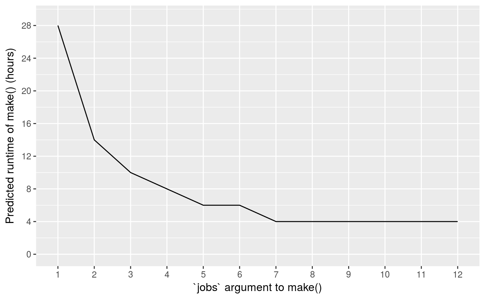

vignettes/timing.Rmd
timing.RmdThanks to Jasper Clarkberg, drake records how long it takes to build each target. For large projects that take hours or days to run, this feature becomes important for planning and execution.
library(drake)
load_mtcars_example() # Get the code with drake_example("mtcars").
make(my_plan, jobs = 2)
build_times(digits = 8) # From the cache.
## # A tibble: 28 x 5
## item type elapsed user system
## * <chr> <chr> <S4: Duration> <S4: Duration> <S4: Durat>
## 1 coef_regression1_large target 0.007s 0.002s 0.005s
## 2 coef_regression1_small target 0.011s 0.01s 0s
## 3 coef_regression2_large target 0.008s 0.008s 0.001s
## 4 coef_regression2_small target 0.007s 0.007s 0.001s
## 5 data.frame import 0.035s 0.032s 0.003s
## 6 knit import 0.034s 0.024s 0.005s
## 7 large target 0.041s 0.022s 0.017s
## 8 lm import 0.024s 0.016s 0.004s
## 9 mtcars import 0.005s 0.002s 0.001s
## 10 nrow import 0.008s 0.007s 0s
## # ... with 18 more rows
# `dplyr`-style `tidyselect` commands
build_times(starts_with("coef"), digits = 8)
## # A tibble: 4 x 5
## item type elapsed user system
## * <chr> <chr> <S4: Duration> <S4: Duration> <S4: Durati>
## 1 coef_regression1_large target 0.007s 0.002s 0.005s
## 2 coef_regression1_small target 0.011s 0.01s 0s
## 3 coef_regression2_large target 0.008s 0.008s 0.001s
## 4 coef_regression2_small target 0.007s 0.007s 0.001s
build_times(digits = 8, targets_only = TRUE)
## # A tibble: 15 x 5
## item type elapsed user system
## * <chr> <chr> <S4: Duration> <S4: Duration> <S4: Durat>
## 1 coef_regression1_large target 0.007s 0.002s 0.005s
## 2 coef_regression1_small target 0.011s 0.01s 0s
## 3 coef_regression2_large target 0.008s 0.008s 0.001s
## 4 coef_regression2_small target 0.007s 0.007s 0.001s
## 5 large target 0.041s 0.022s 0.017s
## 6 regression1_large target 0.013s 0.012s 0s
## 7 regression1_small target 0.007s 0.007s 0s
## 8 regression2_large target 0.025s 0.01s 0.009s
## 9 regression2_small target 0.01s 0.01s 0s
## 10 "\"report.md\"" target 0.071s 0.053s 0.016s
## 11 small target 0.022s 0.02s 0.002s
## 12 summ_regression1_large target 0.007s 0.007s 0s
## 13 summ_regression1_small target 0.008s 0.007s 0.001s
## 14 summ_regression2_large target 0.011s 0.009s 0s
## 15 summ_regression2_small target 0.009s 0.009s 0.001sFor drake version 4.1.0 and earlier, build_times() just measures the elapsed runtime of each command in my_plan$command. For later versions, the build times also account for all the internal operations in drake:::build(), such as storage and hashing.
Drake uses these times to predict the runtime of the next make(). At this moment, everything is up to date in the current example, so the next make() should be fast. Here, we only factor in the times of the formal targets in the workflow plan, excluding any imports.
config <- drake_config(my_plan, verbose = FALSE)
predict_runtime(config, targets_only = TRUE)
## [1] "0.257s"Suppose we change a dependency to make some targets out of date. Now, even though, the next make() should take a little longer.
reg2 <- function(d){
d$x3 <- d$x ^ 3
lm(y ~ x3, data = d)
}
predict_runtime(config, targets_only = TRUE)
## [1] "0.257s"But what if you plan on starting from scratch next time, either after clean() or with make(..., trigger = "always")?
predict_runtime(config, from_scratch = TRUE, targets_only = TRUE)
## [1] "0.257s"Let’s say you are scaling up your workflow. You just put bigger data and heavier computation in your custom code, and the next time you run make(), your targets will take much longer to build. In fact, you estimate that every target except for your R Markdown report will take two hours to complete. Let’s write down these known times in seconds.
known_times <- c(5, rep(7200, nrow(my_plan) - 1))
names(known_times) <- c(file_store("report.md"), my_plan$target[-1])
known_times
## "report.md" small large
## 5 7200 7200
## regression1_small regression1_large regression2_small
## 7200 7200 7200
## regression2_large summ_regression1_small summ_regression1_large
## 7200 7200 7200
## summ_regression2_small summ_regression2_large coef_regression1_small
## 7200 7200 7200
## coef_regression1_large coef_regression2_small coef_regression2_large
## 7200 7200 7200How many parallel jobs should you use in the next make()? The predict_runtime() function can help you decide. predict_runtime(jobs = n) simulates how the targets are be distributed among n workers and then reports the virtual runtime of the busiest worker.
time <- c()
for (jobs in 1:12){
time[jobs] <- predict_runtime(
config,
jobs = jobs,
from_scratch = TRUE,
known_times = known_times
)
}
library(ggplot2)
ggplot(data.frame(time = time / 3600, jobs = ordered(1:12), group = 1)) +
geom_line(aes(x = jobs, y = time, group = group)) +
scale_y_continuous(breaks = 0:10 * 4, limits = c(0, 29)) +
theme_gray(12) +
xlab("`jobs` argument to make()") +
ylab("Predicted runtime of make() (hours)")
Now, let’s say your laptop has 4 single-threaded cores, so you cannot realistically see major performance improvements beyond 4 jobs. Theoretically, if your assumptions about known_times are correct, you should still be able to finish in about 8 hours.
make(my_plan, jobs = 4)But you can chop the time in half if you set jobs to 7 and send your targets to a computing cluster. See the parallelism computing guide for more on how this works.
# Log into the cluster's head node / login node and start R.
$ ssh you@login_node.your_cluster.com
# Deployment to the cluster happens through future and future.batchtools.
library(future.batchtools)
# Write batchtools.slurm.tmpl that tells future.batchtools
# how to talk to the compute nodes on the cluster.
# You should modify and tailor it to your specific computing resource needs.
# For example, make sure your wall time limit is over 2 hours.
drake_batchtools_tmpl_file("slurm")
# Connect future to the cluster.
future::plan(batchtools_slurm, template = "batchtools.slurm.tmpl")
# Each target goes to its own node on the cluster,
# with up to 7 targets running at a time.
make(my_plan, parallelism = "future", jobs = 7, verbose = 4)But why 7 jobs? Why not 8? 8 seems more intuitive when you look at the dependency graph and see a column of 8 targets.
The key is to think in terms of load balancing for persistent workers (transient workers should be similar here). Each free worker moves to each next free target as soon as possible, minimizing idle time. This splits the 14 computationally expensive targets evenly over the 7 workers. If you add another worker, you will still have workers with two expensive targets, each of which will run for 4 hours.
balance <- predict_load_balancing(
config,
jobs = 7,
from_scratch = TRUE,
targets_only = TRUE,
known_times = known_times
)
balance
## # A tibble: 7 x 3
## worker targets time
## <int> <list> <S4: Duration>
## 1 1 <chr [3]> 14405s (~4 hours)
## 2 2 <chr [2]> 14400s (~4 hours)
## 3 3 <chr [2]> 14400s (~4 hours)
## 4 4 <chr [2]> 14400s (~4 hours)
## 5 5 <chr [2]> 14400s (~4 hours)
## 6 6 <chr [2]> 14400s (~4 hours)
## 7 7 <chr [2]> 14400s (~4 hours)
max(balance$time) / 3600
## [1] 4.001389
balance$targets
## [[1]]
## [1] "large" "coef_regression1_large"
## [3] "\"report.md\""
##
## [[2]]
## [1] "small" "summ_regression2_large"
##
## [[3]]
## [1] "regression1_large" "coef_regression2_large"
##
## [[4]]
## [1] "regression2_large" "summ_regression1_small"
##
## [[5]]
## [1] "regression1_small" "coef_regression1_small"
##
## [[6]]
## [1] "regression2_small" "coef_regression2_small"
##
## [[7]]
## [1] "summ_regression1_large" "summ_regression2_small"But be warned: if you use the staged parallel backends make(parallelism = "mclapply_staged") or make(parallelism = "parLapply_staged"), the maximum number of useful jobs really will be 8. Here, if all targets are out of date, the dependency graph is divided into conditionally independent columns and parallelism is only applied in within each column. If some targets are already up to date, those targets are skipped, and each stage is packed with as many outdated targets as possible. Either way, each stage needs to wait for the last target to finish. So if you have computationally expensive targets, this approach is not recommended. However, staged parallelism remains a fast, low-overhead option for workflows with a large number of small, conditionally independent targets.